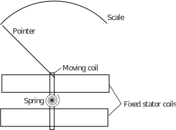

4 Engineering Example 3
Electrodynamic meters
Introduction
A dynamometer or electrodynamic meter is an analogue instrument that can measure d.c. current or a.c. current up to a frequency of 2 kHz. A typical dynamometer is shown in Figure 7.
It consists of a circular dynamic coil positioned in a magnetic field produced by two wound circular stator coils connected in series with each other. The torque on the moving coil depends upon the mutual inductance between the coils given by:
where is the current in the fixed coil, the current in the moving coil and is the angle between the coils. The torque is therefore proportional to the square of the current. If the current is alternating the moving coil is unable to follow the current and the pointer position is related to the mean value of the square of the current. The scale can be suitably graduated so that the pointer position shows the square root of this value, i.e. the r.m.s. current.
Figure 7 :

Problem in words
A dynamometer is in a circuit in series with a 400 resistor, a rectifying device and a 240 V r.m.s alternating sinusoidal power supply. The rectifier resists current with a resistance of 200 in one direction and a resistance of 1 k in the opposite direction. Calculate the reading indicated on the meter.
Mathematical Statement of the problem
We know from Key Point 4 in the text that the r.m.s. value of any sinusoidal waveform taken across an interval equal to one period is 0.707 amplitude of the waveform. Where 0.707 is an approximation of . This allows us to state that the amplitude of the sinusoidal power supply will be:
In this case the r.m.s power supply is 240 V so we have
During the part of the cycle where the voltage of the power supply is positive the rectifier behaves as a resistor with resistance of 200 and this is combined with the 400 resistance to give a resistance of 600 in total. Using Ohm’s law
As where where is the angular frequency and is time we find that during the positive part of the cycle
During the part of the cycle where the voltage of the power supply is negative the rectifier behaves as a resistor with resistance of 1 k and this is combined with the 400 resistance to give 1400 in total.
So we find that during the negative part of the cycle
Therefore over an entire cycle
We can calculate this value to find and therefore .
Mathematical analysis
Substituting the trigonometric identity we get
Interpretation
The reading on the meter would be 0.31 A.
Exercises
-
Calculate the r.m.s values of the given functions across the specified interval.
- across
- across
- across
- across
- across
-
Calculate the r.m.s values of the given functions over the specified interval.
- across
- across
- across
- across
-
Calculate the r.m.s values of the following:
- across
- across
- across
- across
- across
- across
- across
-
Calculate the r.m.s values of the following functions:
- across
- across
- across
-
- 2.0817
- 1.5275
- 0.4472
- 1.7889
- 6.9666
-
- 12.4957
- 0.7071
- 1
- 1.0690
-
- 0.7071
- 0.7071
- 0.7071
- 0.7071
-
- 1.5811
- 1.3466
- 2.2724